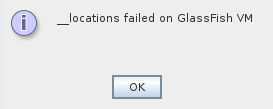
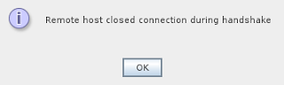

If you are having errors when adding a remote GlassFish server to your NetBeans installation and you are sure there's connectivity between you and the remote server and all the required ports are open, a possible cause might be not having the remote secure administration enabled (which is required if you want to deploy remotely).
|  |
| __locations failed on Glassfish VM |
|  |
| Remote host closed connection during handshake |
Just get access to your server's system console and use
asadmin to enable the secure administration:
Any OS:asadmin enable-secure-admin
Make sure you have the GlassFish
bin folder in your path, which contains the
asadmin script.